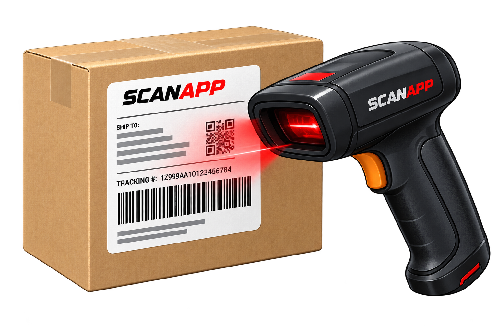
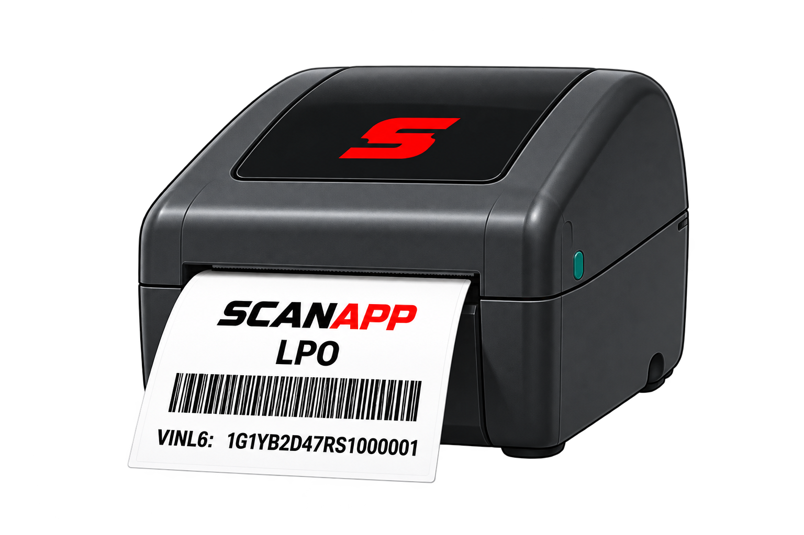
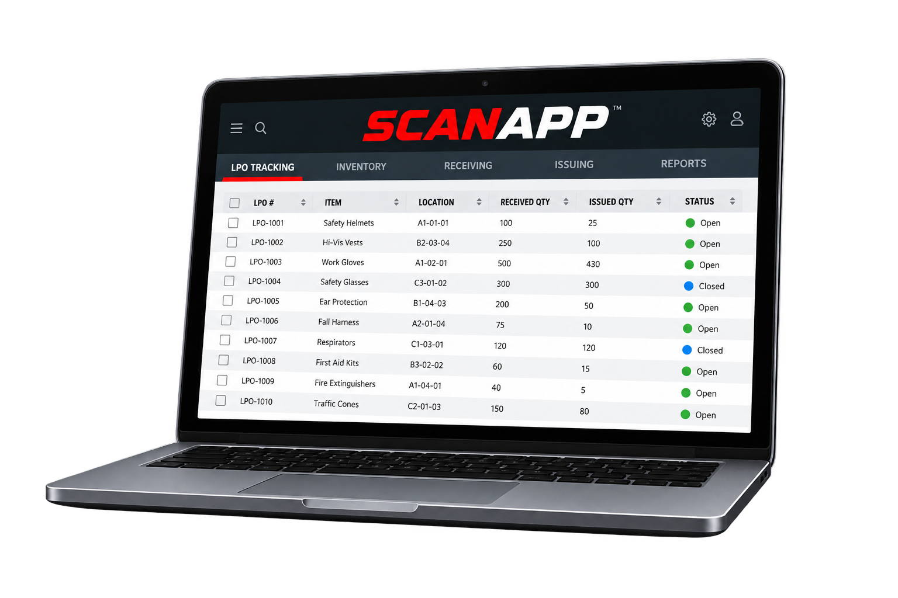

The ScanApp LPO Solution
From receipt to issue, every LPO is tracked, accountable and easy to find.

IDENTIFY
GM shipment data automatically provides all incoming LPO information.
RECEIVE
Receive LPO parts using ScanApp’s handheld scanner, which records the shipment as an LPO on an easy-to-use and accessible web interface.

LABEL
(Optional Printer)
Print VINL6, part information and a barcode to be attached to the received part for easier physical searching, locating and scanning.

TRACK
Track Received, Issued and Remaining quantities with VINL6 visibility.
ISSUE
When issued to Service, record the service RO and the status changes to Issued. The barcode on the ScanApp label can also be scanned as an alternative method of issuing the LPO.
 SEE IT IN ACTION
SEE IT IN ACTION